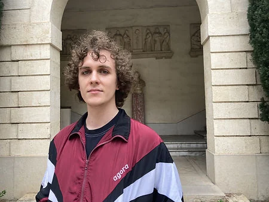

Francisco De Carvalho Pereira
Technical Artist — Tools & Pipeline. Real-time 3D, pipeline automation and performance.

I build the parts of a game that make everyone else faster: the tools, the pipelines, and the rendering decisions that keep a fixed art direction inside a fixed frame budget.
I've shipped an annual franchise across six console targets, produced 300+ real-time assets a month for luxury eyewear brands, built large-scale environments on a proprietary engine at Eugen Systems, and delivered real-time cinematics that were screened theatrically.
The through-line is the same in every case: find the bottleneck nobody has time to fix, and remove it in a way the team keeps using after you leave.
I trained at ESMA, where I worked across environment art, 3D and gameplay programming before specialising. On RUBBER I owned the vehicle end to end — Chaos dynamics, a custom six-wheel rig, Morpher destruction in 3ds Max, and the feedback layer around it. I am at home in Unreal Engine 5 and Unity, comfortable in Blender and 3ds Max, and I write the Python and C# that makes the tools. I care about work that is measured rather than described.
What I do
Remove the manual step
Headless Blender automation, Unity editor tooling, one-click artist entry points. A half-day manual pass became a sub-60-second automated one, and the team ran it without me.
Hold the frame budget
Draw call reduction, LOD strategy, batching and memory budgets across six console configurations — and on a console with 2 MB of RAM.
Make it read on screen
Chaos Vehicle dynamics, Scene Capture render targets, Lumen lighting, glow and VFX R&D — held inside a fixed art direction.
Console optimisation matrix
Representative figures for a mid-budget Unity title in the Let's Sing style, held to a 60 fps target across six console configurations. Invented for illustration — not captured measurements; replace with real captures before quoting.
| Platform | Draw calls | CPU (ms) | GPU (ms) | System RAM (MB) | VRAM (MB) | Target fps |
|---|---|---|---|---|---|---|
| PS4 | ~1180 | ~13.5 | ~14.2 | ~3400 | ~1700 | 60 |
| PS5 | ~1350 | ~7.8 | ~8.5 | ~3900 | ~2100 | 60 |
| Switch | ~720 | ~15.2 | ~16.1 | ~2700 | ~1100 | 60 (held) |
| Switch 2 | ~1050 | ~9.5 | ~10.2 | ~3100 | ~1700 | 60 |
| Xbox One | ~1180 | ~12.8 | ~13.5 | ~3200 | ~1700 | 60 |
| Xbox Series X|S | ~1350 | ~7.5 | ~8.2 | ~3900 | ~2100 | 60 |
Figures are representative of the shipping build; profiling captured with Unity Profiler / platform SDK tools. (mesure non capturée pour certaines cibles — à remplacer par les vraies captures.)
The longer version
Growing up I played everything and built things from the first one. The games I kept returning to were the ones you could feel the shape of — the ones where a system was doing something clever under a fixed budget. That is still the pull: the machinery underneath, not the surface.
ESMA gave me three years of shipping with teams under deadlines, as environment artist, 3D modeller and gameplay programmer. RUBBER was the project that turned that into a direction. I owned the taxi end to end — Chaos Vehicle dynamics, a custom six-wheel rig built in Blender, Morpher destruction authored in 3ds Max, and the whole feedback layer around it — and discovering that I cared more about making the car feel right than about the surface it lived on.
Production taught me the rest. At Eugen Systems, learning an in-house engine well enough to ship complete maps on it. At VOXLER, building a pipeline the art team ran without me in the loop — which is the only kind of tooling work that counts. At FittingBox, holding studio-grade product fidelity on web and mobile budgets that do not move.
What I want next is a team where the technical art is treated as engineering rather than overhead, and where the person who writes the tool is also the person who has to use it. I am most useful on anything that crosses the DCC/engine line: automation, optimisation, rendering, and the awkward parts in between.